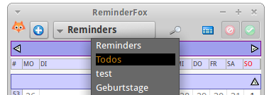
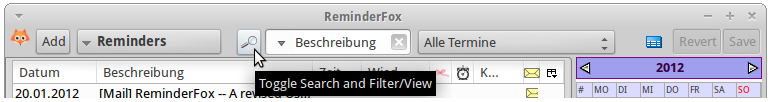
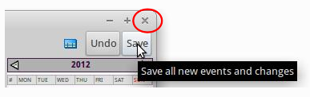
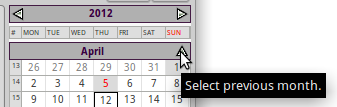

User Guide - ReminderFox Main Dialog
Open the Reminderfox Main Dialog
To work with Reminderfox from within the host application (Firefox or Thunderbird), with the Reminderfox installation some buttons are added at different places.
Buttons on Menu Bars of Firefox / Thunderbird
There are three buttons available:

- Foxy Icon: Open the Reminderfox Main Dialog; hovering the cursor over it will open the tooltips with the Today's, Upcoming Reminders and ToDo's
- Calendar Icon: can be used to open a 3-month calendar which shows the relevant reminders. This is a method to works with reminders without opening the Reminderfox Dialog. Any addition or change will be added to the ICS data model as well as to the Reminderfox Dialog if open. This mode is limited to Reminders.
- Bow: Add a Reminder or Todo directly to the ICS data model.
The Foxy Icon is the most important and frequently used button to work with Reminderfox. For that it's automatically placed on the Firefox/Thunderbird main menu bar a the very first startup of Reminderfox. Also -- if the user don't need it -- it can be removed. For details see
Customize my Reminderfox
Foxy Bow
A special button is supplied to show today's and upcoming reminders with a icon and text combination:

See also about
Reminderfox Notifications
Reminderfox Main Dialog
The Main Dialog is one of the main places to allow you to view and manage the reminders. To bring it up, you can double-click on the ribbon icon, or right-click on it and select
[View Reminders ..] from the context menu.
 |
The Main Dialog has three parts: the "Main List", a right hand "Calendar" and a "Menu Button Bar" on the top and -- pending of user's setting -- at the bottom also.The Main List and the Calendar displays all of your reminders along with any attributes in the various list columns or on the day fields of the Calendar.The Main Button Bar has a selector for your Reminders, ToDo's, as well as any custom lists that you set up.There are more button to be discussed later. |
Main Dialog - Layouts
Opening the "Reminderfox Dialog" by default shows the "Main List" with reminders and at the right a "Calendar". This is the default layout, but there are a total of three layouts:
- Main List and Calendar
- Main List only
- Calendar only
Opening the Reminderfox Main Dialog will open the last used layout. The individual layout is selected with the upper left Foxy icon (see below for details).
The top part of the dialogs -- the Main Menu Bar -- holds the main handles to work with all Reminderfox layouts.
The Calendar can show one or more month.
Reminderfox Main List
List Columns
Reminders or Todo's display on the Main List are shown with it's defined attributes, all organized in columns. Most columns are hidden by default. You can view and add additional columns by clicking the column chooser in the top-right of your column header.
 |
- Time - shows you what time an event occurs, or
all day if it's an all day event
- Date Completed - shows the date that a reminder was completed on
- Repeat - shows a brief text explaining what kind of repeat option is set for the reminder (weekly, monthly, yearly, etc)
- Complete - shows a checkbox icon if a reminder has been completed. You can directly interact with this column to toggle the completed status of a reminder.
- Notes - shows a note icon if the reminder has an associated note containing more information
- Remind Daily Until Completed - shows a ribbon icon if the reminder has been set to
Remind Daily Until Completed. The ribbon will be blue if this option has been set but the reminder date is still in the future. The ribbon will be red if the reminder date has passed and
the reminder is now overdue.
- Alarm - shows an alarm icon if the reminder has an alarm set. Hovering over the alarm icon will show you the alarm details.
- Mail - shows a mail icon if this reminder is associated with an email (Thunderbird only).
- Remote Calendar - if use a reminder which is connected to a remote calendar will have an icon and a id-letter
|
You can show and hide any columns that you want. You can also move the columns to any position you like by dragging the column header to where you want. Several columns allow you to manipulate the reminder by clicking in the column. Clicking the Complete columns toggles a reminder's Complete status; clicking in the Remind Daily Until Complete column toggles that option on or off, and clicking on the mail icon will open up the email associated with that reminder in Thunderbird. |
Context Menu
A right-mouse-click on a reminder on the Main List brings up a context menu to select a number of options:
 |
- Edit Reminder - Allows you to edit all of the properties of the reminder.
- Delete Reminder - Deletes the reminder from your list. If it is a repeating reminder, you will be prompted whether you want to delete all instances or just the current selected (and previous) instance.
- Move to List - Moves the selected reminder to any other list, such as the ToDo list or any custom list.
- Important Toggles the reminder's important status. This is for those extra-special events that you can't miss, like your wife's birthday. These reminders will show up highlighted in red in the Reminders list, as well as in the tooltip and status bar.
- Complete - Reminders can be marked as Completed. This is useful for reminders that you finish with and no longer wish to be reminded about in the tooltip or in the status bar. example: if you have a reminder to "Pay phone bill" and you pay it early, then you can mark it as Complete and it will not show up in the upcoming reminders. The completed status resets after the date has passed so the reminder will show up again the following year.
- Remind Daily Until Completed - This option causes the reminder to continue to remind you until it has been completed. This means that once a reminder occurs, it will continue to show up each following day until such time as you mark the reminder as 'Completed' (via the context menu). This is useful for things where you want to keep reminding yourself until you actually do it, like "remember to call Mom". Once a reminder has been completed, you can mark it as Complete from the context menu (or untoggle the Remind Daily Until Completed).
- Find - allows you to search for a reminder containing specific text
- Hide All Repeat Reminders - Hides all repeating instances of repeating reminders, and only shows one instance (the next upcoming instance). This option overrides your global preferences and only takes affect while viewing the current window.
- Show All Reminders - This will show all reminders in your list. This option
overrides your global preferences and only takes affect while viewing the current window.
- Hide Completed Items - This hides all reminders that have been marked complete. This option overrides your global preferences and only takes affect while viewing the current window.
- View as HTML - this displays your current list of reminders in a browser window. This can be used to print your reminders.
|
Editing Reminders on the Main List
You can double click on any reminder in the list to edit it. This will bring up the reminder window and allow you to change any of the options that you initially set.
Reminderfox 'Menu Button Bar'
'Foxy' Menu
 |
Use the Foxy to open the 'main' menu with
- Select List/Calendar layout .. (opens a sub menu for direct selection of layout)
- Find (same as Cntrl f) -- find event by text string
- Quick Alarm ... (opens a sub menu)
- Suspend Alerts and Alarms ... (disable Alarms and Popups)
- Sync Remote Calendar/CalDAV -- open sub menu for CalDAV
- Open Options Dialog ... -- customize your Reminderfox
- Help -- standard Reminderfox documentation
- About Reminderfox -- also a link to support
|
Reminders/Todos/List
|  |
The [Reminders] button opens a menu with all event lists: (Reminders, ToDos, and User Lists).After the selection the button label will change accordingly. An Options setting is available to open the menu by just hovering the cursor over the the button (see Options --> General) |
 |
The last entry to the menu is used for a direct call to Options / List to manage the User Lists. |
Search Text / Filter/Views
 |
The Spyglass button will show/hide the "Search Text / Filter/Views" box. |
| The "SearchText / Filter/View" box opens with the "Main List/Calendar" layout on the Main Menu Bar beside the spyglass, with the "Calendar only" layout in a separate line below the Main Menu Bar : |
|  |
|
| "SearchText / Filter/View" has two helpful search / filter functions:
The left Text box is for search all events which meets an entered text string.The search is done on the events attributes: Description, Categories, Notes, Location or all of these.
First select the attribute, then enter the string. The search will be executed with each character entered.
The Main Dialog header will be changed appropriated (bold/blue), and the spyglass icon is changed. Also the spyglass has a tooltiptext to show the selection/entry. So the user is remembered about the search entry.The string is cleared with the blue button, or with selecting another attribute.
The right Filter/View pull down menu has two parts:
1. First 7 menu items
Used to select all events in given date ranges: All events in the selected year, selected month, selected week, selected day, next week, next two weeks and all upcoming events.
2. The 'Views'
This part of the menu offers a flexible, configurable filter mechanism with multiple attributes giving a greater flexibility. 'Views' also preselects/filters the events to be displayed in the List and Calendar. By default some definitions are provided:
| Upcoming Birthday |
Summary:Birthday;DATE:1M; |
All birthdays of the next month |
| Holidays |
CATEGORIES:Holiday; |
Only reminders with 'Category' Holiday |
| Mailed reminders |
SUMMARY:Mail,Send;DATE:-6M,4W; |
Reminders with 'Mail' or 'Send' in the 'Summary/Description' AND with start date from 6 month in the past to 4 weeks in the future -- this is related to 'today' |
| All Reminders (all years) |
DATE:-99Y,99Y; |
This is a *not recommended* for normal use! It's only to help showing reminders 99 year in the past and in the future. Can degraded the performance! |
For details how to interpret a 'View' and how to setup those to meet your requirements, see the "View Editor".
With selecting a Filter/View menu item the Reminderfox Dialog Title will reflect that selection, eg. "Reminderfox [Selected Week]".
Closing Filter /Views Menu
The 'Spyglass' is used to open/close the "Search / Filter/View" handles. Closing will NOT reset to "all" events. The Dialog Titel, the List Header and the modified spyglass will remember about the setting.
Also closing the Reminderfox Main Dialog will remember the "SearchText / Filter/View" box status (open/close) and will return to that status with reopen the Main Dialog. |
Date Selector
The 'Date Selector' controls the year / month shown in the Calendar and the Reminder/Todo/List.
 |
A mouse click on the Date Selector opens a small panel with [Today] and [OK] buttons and a selection box.The right mouse click on the Date Selector sets the year / month to "Today" -- the same as using the key ".", see also Key functions.That selection box allows to set any date. Select day, month or year and increase/decrease with button right to them.Using the very right button will open an additional calendar widget.Either way changes the date. [OK] will take that as the 'selected' date. |
Undo / Save Buttons
Both buttons are disabled as long as no new events has been entered
and/or no event has been edited and the buttons have not been used.
[Undo] Button
 |
The 'Undo' button is a revert function for all new and changed events. Using it - after confirmation - all unsaved changes will be lost -- all of them! |
[Save] Save Button
|  |
All new and changed events will be stored to the ICS data file. The dialog will NOT be closed. |
Closing Reminderfox Dialog
With closing the dialog all unsaved events will be saved. For closing the Remindefox main dialog the normal window/dialog close button is used (marked above with red circle). With other operating systems or themes that dialog button can be found on the left side (as with Apple OSX). Closing the dialog will remember the dialog size and position, the text size and the Search Text / Filter/Views. Those values will be restored when reopened.
Note: currently with Linux/Ubuntu doesn't works for the dialog position.
Calendar

|
With Foxy Menu on the Reminderfox Dialog a small layout called "Calendar" con be selected.As usual it can be sized as required.The dialog box has two parts - the "Main Menu Bar" (as described above) and - the "Calendar" box.The Calendar contains the current Calendar Year box, the Week Header Box, the Month Boxes. If these elements are too high to fit into the dialog box, Arrow Scroll Handles are added.
Arrowscrolling doesn't include the 'Week Header Box'; that way the Week Header Box showing the days of the week is always on screen. |
Week Header Box
Week days labeling (eg. SUN MON .. SAT) is en-/disabled with Reminderfox Options tab: "General".
Select "Base / US" scheme or "ISO8601 / European" format.
The first day of a week can be selected also with mouse click on the day header label (MON .. SUN)
Month Box
The Calendar displays a number of months.
Each month is displayed with
Month Header, a grid with the weeks of the month.
If the week numbering is enabled (see Reminderfox Options tab: "General") the first box column shows the week number.
Month Header
Mouse click on the first and last month header box changes the months to be displayed. These method allows to scroll the months in both directions, also changing the year boundary.
|  |
Click on the arrow on the first month header will show the previous month. |
 |
Click on the arrow on the last month header will show the next month.Notes:
- In this picture below the week #26 row (June 25 -- July 1) an arrowscrollbox is shown. That's because all of the content for the months doesn't fit to the dialog. Moving the cursor over the arrowscrollbox will scroll the content.
- With only one month selected to be displayed, the up and down arrows are on the same month header.
|
Day Box in Month Grid
Days of the month are grouped by weeks; if enabled the week number is shown in the first column. Days not belonging to the month in the box will be shown with light gray numbers and are not selectable.Days of the month will be shown with black numbers as long as there are not special events/attributes:
- bold text: actual day (today)
- red text: day has important event
- light gray text: belongs to previous/next month
- day with event(s) has yellow background
- day with completed event has gray background
Days without events:
- No day panel is shown.
- Click on the day will select that day as the "Selected Day".
- Right mouse click will open the "Add Event" dialog.
Day with events:
The "Selected Day" with events will be displayed differently in 'Calendar only' mode or 'MainList / Calendar':
'Calendar' only This mode is shown at the beginning of this document. Other than with MainList/Calendar there are benefits:
- column of the 'Selected day' is expanded
- selected day box shows the Day Content Box
- the events have a context menu to allow different actions
'MainList / Calendar'
- selected day has black boarders
- hovering the mouse cursor over the day boxes with events will show the Day Content Box for that day
Day Content Box
The 'Day Content Box' will be shown with
- hovering the cursor over a day of the month grid with events on that day or
- in 'Calendar only' mode as content for the 'Selected Day'.
That box have two parts:
- Day Header shows the week day and the day date - formatted as set with Reminderfox Options --> List Display.Click on the day header will open a "Add Event" dialog to add a new event.
- Day Event Box which holds all items of an event of the day. If the day has multiple events, there are multiple day event boxes.
Day Event Box
 |
This day content box has multiple events, the cursor was hovered over the second. The color changed to show it's selected.Here the cursor was moved over the summary. Another mouse click would open that event for editing. |
Details of the event are shown on separate lines:
- line 1 -- Day and Time shown only if
- the event has start/end time -- so it's not a whole day event
- multi day event -- in that case start and end days are displayed
- line 2 -- Icon / Summary line always shown
- leading icons for special attributes (see also Event Icons)
- event summary
- Text attributes are: -- red: important -- strike thru: completed
- line 3 -- Date completed line shown only if valid
- line 4 and following line(s) shown only if valid
- location -- mouse click on the link goes to Goggle Maps
- URL -- mouse click on the link goes to web page
On the Event Box a context menu offers: Add, Edit, Copy, Delete, Complete, Send/Export
Event Icons
Events with certain attributes are displayed with icons in front of the event summary:
Keys
| [ Cntrl ] [ t ] |
change main dialog layout: Calendar --> MainList and Calendar --> MailList |
| [ Cntrl ] [ l ] |
change list: Reminder --> Todo --> List --> |
| [Page up] [Page down] |
change 'selected month' |
| [ . ] |
go to Today |
| [ Cntrl ] [ c ] |
hide / unhide completed events |
|
|
| [ Cntrl ] [ q ] or [ Cntrl ] [ shift ] [ ? ] |
toggle the Spyglass with "Search Text / Filter/View" |
|
|
| [ Cntrl ] [ f ] |
open search / filter dialog |
|
|
| [ Cntrl ] [ r ] |
reload current ICS data file; helpful to sync with remote system (Lightning, Dropbox) |
Text and Calendar Size
The new layout of the Calendar also features a variable size concept. That is achieved with changing the text size.
Additionally also the text size of the List can be changed. For both -- the "Main List" and the "Calendar" -- the modes are:
[ Cntrl ] [ + ] [ - ] [ # ]
|
Change the size for Calendar
|
[ Alt ] [ + ] [ - ] [ # ]
|
Change the size for List
|
|
[ # ] = Reset to default text size
|
Both settings are stored when closing the Reminderfox Dialog and will be reused with next start.
The default text size can be defined on Reminderfox Options tab "General".
Feedback
 |
Please use the "About Reminderfox" dialog and one of the mailto links |


 Hover over or click the mouse on the icon to get specific actions:
Hover over or click the mouse on the icon to get specific actions: